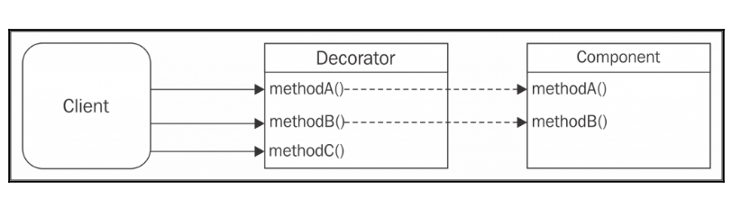

Structural Patterns in JavaScript
Created for
Iva E. Popova, 2018-2019,

Mixins
About
- Mixin Pattern represents a class that defines a set of functions intended to be inherited from other sub classes.
- Mixins classes are considered abstract, as they will not themselves be instantiated.
- A class can inherit functionality from multiple mixins through multiple inheritance.
example
// The Mixin - exports functionalities for vehicles
var Mixin = function (){};
Mixin.prototype = {
drive(){console.log( "Driving" )},
ride(){console.log( "Riding" )},
stop(){console.log( "Stopping" )},
purr(){console.log("Purr rrr rrpp prr ppprrrr")},
};
// some constructor, which can borrow methods from Mixin
var Bike = function ( settings ) {
this.model = settings.model || "unknown";
};
var Car = function ( settings ) {
this.model = settings.model || "unknown";
};
// helper function to extend an object by Mixin:
// augment( Constructor, Mixin, [methodsArray] );
function augment( receiver, giver, methodsArray ){
// with a list of specified methods:
if ( methodsArray ){
methodsArray.forEach(m => {
receiver.prototype[m] = giver.prototype[m];
});
}
// with all methods
else {
for ( let methodName in giver.prototype ) {
if ( !Object.hasOwnProperty.call(receiver.prototype, methodName) ) {
receiver.prototype[methodName] = giver.prototype[methodName];
}
// augment by prototype chain:
// if ( !receiver.prototype[methodName] ) {
// receiver.prototype[methodName] = giver.prototype[methodName];
// }
}
}
}
// Augment the Bike constructor with some of the Mixin methods:
augment( Bike, Mixin, ["ride", "purr"] );
// Augment the Car constructor with all of the Mixin methods:
augment( Car, Mixin );
// make some objects
var ford = new Car({ model: "Ford" });
console.dir(ford);
var harley = new Bike({ model: "Harley Davidson" });
console.dir(harley);
and more...
Mixins are a form of object composition, where component features get mixed into a composite object so that properties of each mixin become properties of the composite objectFunctional Mixins by Eric Elliott
Decorator
about
{kind=link}
Dynamically augments the behaviour of an existing object
How Decorator differs from Classical Inheritance?
- The behaviour is not added to the all of the objects from the same class.
- We can add behaviour only to the object being decorated.
Object decoration
function objectDecorate(component) {
//assign new method to component
component.greetings = () => {
console.log(`Howdy`);
};
return component;
}
Example
// The constructor to decorate
function Laptop() {
this.price = function() { return 1000; };
this.screenSize = function () { return 13; };
}
// Decorators
function memory( laptop ) {
let p = laptop.price();
laptop.price = function() {
return p + 75;
};
}
function ssd( laptop ) {
let p = laptop.price();
laptop.price = function() {
return p + 125;
};
}
// usage
var thinkPad = new Laptop();
memory( thinkPad );
ssd( thinkPad );
console.log( thinkPad.price() );
Decorator by Composition
function compositDecorate(component) {
const protoComp = Object.getPrototypeOf(component);
function Decorator(component) {
this.component = component;
}
Decorator.prototype = Object.create(protoComp);
//new method
Decorator.prototype.greetings = function() {
return 'Good evening';
};
//delegated method
Decorator.prototype.hello = function() {
return this.component.hello.apply(this.component, arguments);
};
}
Function decorators - simple
- Let's look at the most simple case - decorating a function without arguments:
// just a helper function
function getCurrentDate(){
let d = new Date();
return `${d.getDate()}.${d.getMonth()+1}.${d.getFullYear()}`
}
// decorator function defined with function declaration
function decorator(f){
console.log(`${f.name} was called on ${getCurrentDate()}`);
return f
}
// decorator function defined with lambda (arrow function syntax)
const lambdaDecorator = f => {
console.log(`${f.name} was called on ${getCurrentDate()}`);
return f
}
// the function to be decorated
function howdy(){
console.log(`Howdy World!`);
}
// decorate the function
howdy = lambdaDecorator(howdy)
// use the decorated function
howdy();
Function decorators - with arguments
- Now, we can look at the more common case - decorating a function with arguments:
// decorator function defined with function declaration
function logDecorator(f){
return function(...args){
console.log(`${f.name} called with args: ${args}`);
return f(...args);
}
}
// decorator function defined with lambda (arrow function syntax)
const logDecoratorLambdas = f => (...args) => {
console.log(`${f.name} called with args: ${args}`);
return f(...args);
}
// the function to be decorated
function add(x,y){
return x+y;
}
// decorate the add function
const decoratedAdd = logDecorator(add);
const lambdasDecoratedAdd = logDecoratorLambdas(add);
// use the decorated function
console.log(decoratedAdd(2,3));
console.log(lambdasDecoratedAdd(2,3));
Façade
about
- Provides alternative (often - simplified) interface to an object
- Good for organizing short methods in to one when called together repeatedly
- Suitable for browser scripting where the differences between the browsers can be hidden behind a façade
basics
var method1 = function(){
console.log(`Method 1`);
}
var method2 = function(){
console.log(`Method 2`);
}
var methodWrapper = function(){
method1();
method2();
}
Iterator
about
- Provides easy access to elements of complex data structure.
- An "iteration interface" to complex data structure
- Exports next() method available to the consumer of the structure
- The module designer decides what the next() should be!
about
- An object is an iterator when it knows how to access items from a collection one at a time, while keeping track of its current position within that sequence
use cases
var element;
while (element = complexObject.next()) {
// do something with the element ...
}
if hasNext() method is defined:
while (complexObject.hasNext()) {
// do something with the next element...
}
implementation (MDN)
function makeIterator(array) {
var index = 0;
return {
next: function() {
return index < array.length ?
{value: array[index++], done: false} :
{done: true};
}
};
};
var it = makeIterator([1,2,3,4,5]);
var element;
while( element = it.next().value){
console.log(`${element}`);
}
implementation (SS)
var agg = (function () {
var index = 0,
data = [1, 2, 3, 4, 5],
length = data.length;
return {
next: function () {
var element;
if (!this.hasNext()) {
return null;
}
element = data[index];
index = index + 2;
return element;
},
hasNext: function () {
return index < length;
}
};
}());
// this loop logs 1, then 3, then 5
while (agg.hasNext()) {
console.log(agg.next());
}
Observer
- The Observer Pattern defines an object (called subject), which can notify a set of observers (or listeners), when a change in its state happens.
- Define a one-to-many relationship between objects so that when one object changes state, all its dependents are notified and updated automatically.
{kind=link}
Example - Subject-Observer pattern
//The Subject "class"
var Subject = function () {
this.observerList = [];
}
Subject.prototype.registerObserver = function(observer) {
this.observerList.push(observer);
}
Subject.prototype.unregisterObserver = function(observer) {
// find the Observer that wants to be removed
var index = this.observerList.indexOf(observer);
// Remove it from the array
this.observerList.splice(index, 1);
}
Subject.prototype.notifyObservers = function() {
for (let i = 0, len = this.observerList.length; i < len; i += 1) {
this.observerList[i].notify();
}
}
// The Observer "class"
var Observer = function() {
// notification means calling a method of the subscriber object
this.notify = function() {
throw "notify() is not implemented";
}
}
Example - Subject-Observer case
var data = 0;
// create Subject
var subject = new Subject();
// create Observers
var a = new Observer();
a.notify = ()=> {console.log(data)}
var b = new Observer();
b.notify = ()=> {console.log(data)}
// Register the observers
subject.registerObserver(a);
subject.registerObserver(b);
// use
for (var i = 0; i < 4; i += 1){
data += 1;
subject.notifyObservers();
}
// Unregister observer a
subject.unregisterObserver(a);
// change data and notify again
data += 1;
subject.notifyObservers();
Example - color list items by first letter select
- orchidea
- astronaut
- origami
- Argentina
- rocket
- ontology
- Einstein
Example - color list items by first letter select
- orchidea
- astronaut
- origami
- Argentina
- rocket
- ontology
- Einstein
Example - color list items by first letter select
body{
font-size: 2em;
}
.observerWrapper{
width: 10em;
margin: 3em;
border: 1px solid #999;
}
.subjectWrapper{
height: 2em;
margin: .5em 0 0 0;
text-align: center;
border-bottom: 1px dotted #999;
}
.subjectWrapper>label{
display: inline-bwlock;
/*width: 100%;*/
/*height: 3em;*/
}
.subjectWrapper>select{
width: 3em;
font-size: 1em;
}
ul{
margin: 0;
}
li{
list-style-type: none;
padding: .3em 0 0 .5em;
}
Example - color list items by first letter select
// ~~~~~~~~~~~~~~~~~~~~~~~~~~~~~~~~~~~~~~~~~~~~~~~~~~~//
// The Subject (Publisher) "class", (the SELECT element in example)
var Subject = function () {
this.observerList = [];
}
Subject.prototype.registerObserver = function(observer) {
this.observerList.push(observer);
}
Subject.prototype.unregisterObserver = function(observer) {
// First we find the Observer that wants to be removed
var index = this.observerList.indexOf(observer);
// Remove the item from the array
this.observerList.splice(index, 1);
}
Subject.prototype.notifyObservers = function(params) {
for (let i = 0, len = this.observerList.length; i < len; i += 1) {
this.observerList[i].notify(params);
}
}
// The Observer "class"
var Observer = function() {
// Each observer must! implement their own version of notify:
this.notify = function() {
throw "Observer.notify() Not Implemented!";
}
}
// helper function to extend an object
var augment = function(receiver, giver){
for( key in giver){
receiver[key] = giver[key];
}
}
// ~~~~~~~~~~~~~~~~~~~~~~~~~~~~~~~~~~~~~~~~~~~~~~~~~~~//
// MAIN
var nodes = {
subject: document.querySelector('.subject'),
observers: document.querySelectorAll('.observers>li'),
}
// attach listeners:
document.addEventListener("DOMContentLoaded", function(event) {
nodes.subject.addEventListener('input', (e)=>{
var letter = e.target.value;
e.target.notifyObservers(letter);
})
});
// make nodes.subject a Subject
augment( nodes.subject, new Subject() );
// make each observer(LI element) an Observer
for( let observer of nodes.observers){
augment( observer, new Observer());
observer.notify = function(letter){
var firstLetter = observer.innerHTML.charAt(0);
if( firstLetter.toLowerCase() == letter.toLowerCase() ){
observer.style.color = '#F00';
}else{
observer.style.color = '#999';
}
};
// Register the observers to nodes.subject
nodes.subject.registerObserver(observer);
}
downloads
- Download all files: PaintOnStartingLetter.zip
Conclusion
- The Observer pattern provides a natural abstraction between the component that emits the event and those that receive it.
- By Observer, in cross-platform development, we can replace the emitter with its browser-specific implementation without affecting the listeners and vice versa
These slides are based on
customised version of
framework